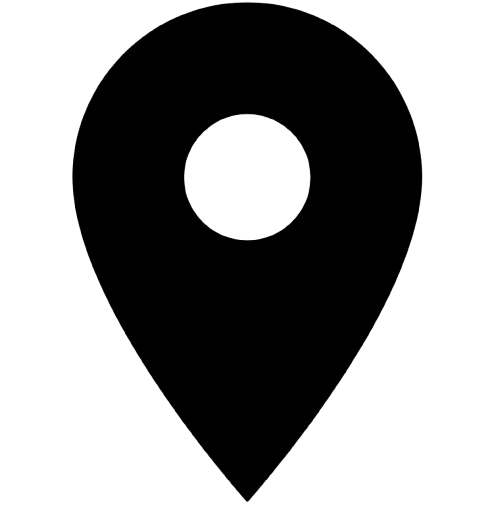

Mais de duas décadas dedicadas à arte da barbearia, combinando
técnicas tradicionais com as tendências mais modernas
De experiência e dedicação ao
ofiício da barbearia
Clientes satisfeitos ao longo dos
anos

Rua Ipuaçu 374, Jardim Amália
A Barbearia Seu Luís nasceu da paixão pelo ofício e do compromisso com a excelência.
Com 20 anos de história, atendemos clientes que buscam não apenas um
corte de cabelo,
mas uma experiência completa de cuidado pessoal e bem-estar. Nosso
objetivo agora é
facilitar ainda mais o acesso aos nossos serviços através do
agendamento online.